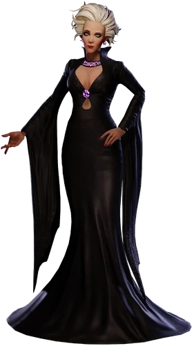

Bierce

Informação Geral
Nome: Bierce
Gênero: Feminino
Idade: +-70
Papel exercido: Guia/Aliado
Poder: Abertura de portais, conjuração de feitiços etc
Fase: Não Possui
Gênero: Feminino
Idade: +-70
Papel exercido: Guia/Aliado
Poder: Abertura de portais, conjuração de feitiços etc
Fase: Não Possui